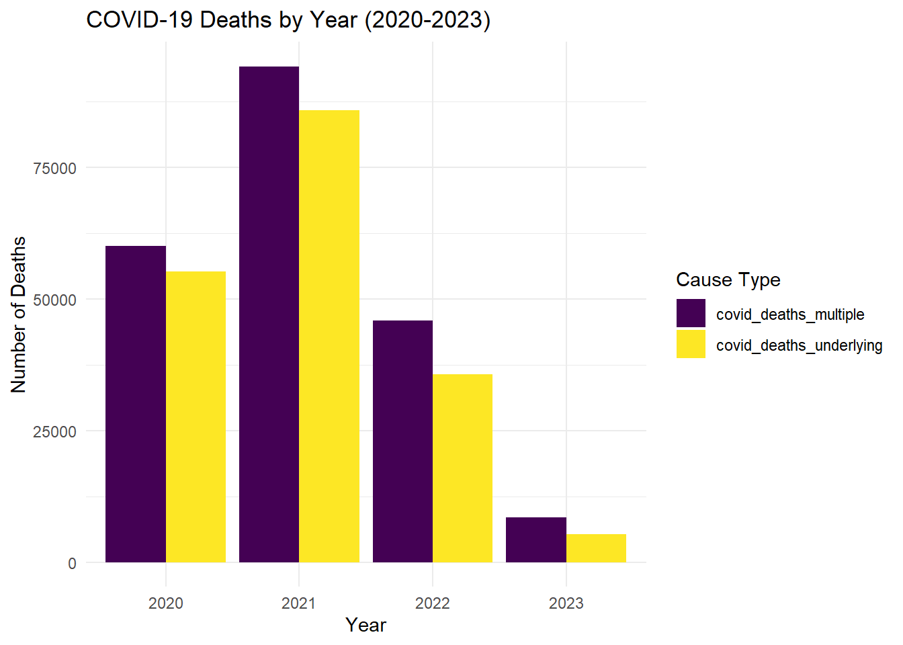

The original dataset (10,476 rows and 35 columns) contains weekly counts of death by cause, week and geographical location.
Date Range: Weekly data from 2020 to 2023.
Geographic Scope: Includes state-level data and “United States” as an aggregated entry.
Due to privacy protection, cells with count under 10 has been supressed and shown as blank. We will generate a random whole number between 1-10 for those cells for further analyses.
library(tidyverse)
library(lubridate)
library(viridis)Import data and do some inital cleaning
data = read_csv("data/weekly_deaths_by_state_and_causes.csv") %>%
janitor::clean_names() %>%
mutate(data_as_of = mdy(`data_as_of`))## Warning: One or more parsing issues, call `problems()` on your data frame for details,
## e.g.:
## dat <- vroom(...)
## problems(dat)## Rows: 10476 Columns: 35
## ── Column specification ────────────────────────────────────────────────────────
## Delimiter: ","
## chr (14): Data As Of, Jurisdiction of Occurrence, flag_sept, flag_diab, fla...
## dbl (17): MMWR Year, MMWR Week, All Cause, Natural Cause, Septicemia (A40-A...
## lgl (3): flag_allcause, flag_natcause, flag_neopl
## date (1): Week Ending Date
##
## ℹ Use `spec()` to retrieve the full column specification for this data.
## ℹ Specify the column types or set `show_col_types = FALSE` to quiet this message.data## # A tibble: 10,476 × 35
## data_as_of jurisdiction_of_occurrence mmwr_year mmwr_week week_ending_date
## <date> <chr> <dbl> <dbl> <date>
## 1 2023-09-27 United States 2020 1 2020-01-04
## 2 2023-09-27 United States 2020 2 2020-01-11
## 3 2023-09-27 United States 2020 3 2020-01-18
## 4 2023-09-27 United States 2020 4 2020-01-25
## 5 2023-09-27 United States 2020 5 2020-02-01
## 6 2023-09-27 United States 2020 6 2020-02-08
## 7 2023-09-27 United States 2020 7 2020-02-15
## 8 2023-09-27 United States 2020 8 2020-02-22
## 9 2023-09-27 United States 2020 9 2020-02-29
## 10 2023-09-27 United States 2020 10 2020-03-07
## # ℹ 10,466 more rows
## # ℹ 30 more variables: all_cause <dbl>, natural_cause <dbl>,
## # septicemia_a40_a41 <dbl>, malignant_neoplasms_c00_c97 <dbl>,
## # diabetes_mellitus_e10_e14 <dbl>, alzheimer_disease_g30 <dbl>,
## # influenza_and_pneumonia_j09_j18 <dbl>,
## # chronic_lower_respiratory_diseases_j40_j47 <dbl>,
## # other_diseases_of_respiratory_system_j00_j06_j30_j39_j67_j70_j98 <dbl>, …How many people died from covid in 2020, 2021, 2022, and 2023?
subset_df = data %>%
filter(jurisdiction_of_occurrence %in% c( "South Dakota",
"Tennessee",
"Texas",
"Utah",
"Vermont",
"Virginia",
"Washington",
"West Virginia",
"Wisconsin",
"Wyoming")) %>%
mutate(year = year(week_ending_date))
# Summarize COVID-19 deaths by year (both multiple and underlying cause)
covid_deaths_by_year = subset_df %>%
group_by(year) %>%
summarise(
covid_deaths_multiple = sum(covid_19_u071_multiple_cause_of_death, na.rm = TRUE),
covid_deaths_underlying = sum(covid_19_u071_underlying_cause_of_death, na.rm = TRUE)
) %>%
filter(year %in% c(2020, 2021, 2022, 2023))
# Reshape the data for easier plotting
covid_deaths_long = covid_deaths_by_year %>%
pivot_longer(cols = c(covid_deaths_multiple, covid_deaths_underlying),
names_to = "cause_type", values_to = "deaths")
# Create the bar plot
ggplot(covid_deaths_long, aes(x = factor(year), y = deaths, fill = cause_type)) +
geom_bar(stat = "identity", position = "dodge") +
labs(title = "COVID-19 Deaths by Year (2020-2023)",
x = "Year", y = "Number of Deaths", fill = "Cause Type") +
scale_fill_viridis(discrete = TRUE) +
theme_minimal()